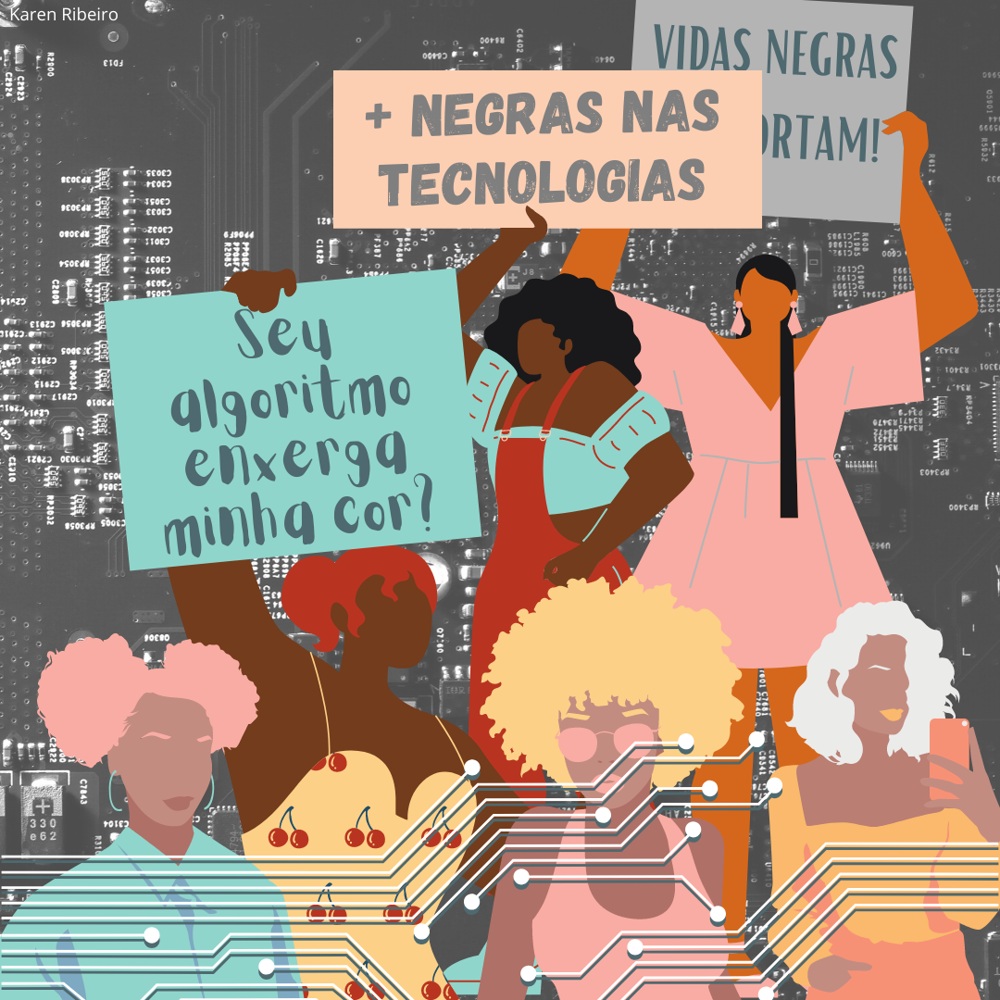

Mulheres negras na Tecnologia
Enedina Alves Marques
foi a primeira mulher negra a se formar em engenharia no Brasil. Nascida em 1913, de família pobre, ela cursou engenharia e se formou aos 30 anos no Instituto de Engenharia do Paraná (IEP). Em agosto de 1981, foi vítima de um infarte.
Segundo dados do IBGE, apenas 20% dos profissionais do mercado de tecnologia são mulheres. Este cenário de desigualdade da presença feminina é ainda mais forte quando se trata de mulheres negras. Segundo a jornalista Noemia Colonna do Olabi, o Movimento Maker é um dos caminhos para superar esta lacuna de representatividade, produzindo uma cultura que democratiza o acesso das pessoas à tecnologia. Projetos como o PretaLab, do Olabi makerspace, por exemplo, permitem que meninas e mulheres negras não apenas consumam, mas também produzam tecnologia
Uma conversa séria sobre Mulheres Negras na Computação e tecnologias
Na força de trabalho no Brasil, mulheres e pessoas negras são apenas 1/3 das profissionais de tecnologia e inovação.por que há tão poucas mulheres e pessoas negras na Computação e tecnologias?
Karen: Como surgiu a iniciativa PretaLab? Você poderia contar um pouco da história da Preta Silvana: “PretaLab é um projeto que eu coordeno dentro do Olabi, uma organização social na qual eu sou diretora. O PretaLab nasceu em 2017 dessa questão de pensar e de olhar para um público específico: as mulheres negras, porque embora o Olabi, desde o começo, tenha nascido com a missão de trabalhar pela democratização das tecnologias, a gente entendeu, depois de 3 anos de organização, que era importante ter um projeto que dialogasse com esse público.
PretaLab
Acesse ao site PretaLabÉ uma plataforma que conecta mulheres negras que são ou gostariam de ser da tecnologia, por meio dos nossos ciclos formativos, rede de profissionais, mercado de trabalho, consultorias e estudos.